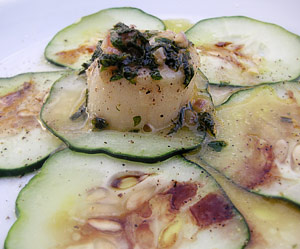

Coquille Saint-Jacques (Jakobsmuschel) auf Nostranogurken-Carpaccio
5 von 6Die Jakobsmuscheln unter fliessendem Wasser gut abspülen, abtropfen. In reichlich Butter mit frischen Gewürzen sowie einer fein geschnittener Echalotte und etwas Knoblauch beidseitig ca. 2 Minuten anbraten. Mit Champagner ablöschen und auf den fein geschnittenen Gurken anrichten.
